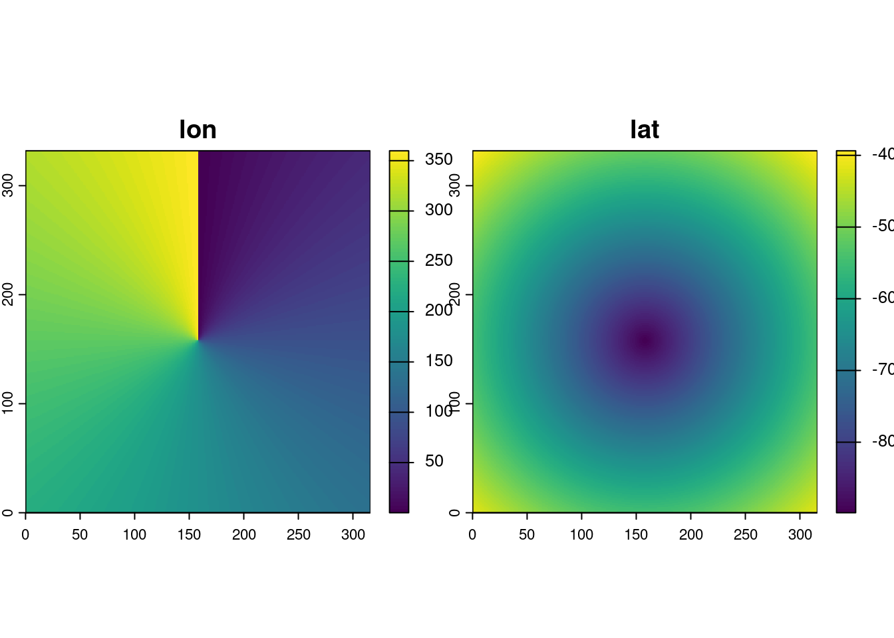

hypertidy-blog
Packages
About
hypertidy-blog
Categories
All
(17)
ceramic
(1)
code
(1)
gdal
(8)
mesh
(2)
netcdf
(5)
news
(1)
overview
(3)
projections
(2)
r-packages
(2)
raster
(7)
rgl
(2)
vaster
(1)
zarr
(1)
Detecting hidden grids in curvilinear coordinates
gdal
raster
netcdf
projections
A lot of gridded data arrives with two-dimensional longitude and latitude arrays: one value per pixel, stored explicitly. This is the standard representation for curvilinear…
Feb 7, 2026
Michael Sumner
Raster logic without pixels
raster
vaster
Every geospatial package that works with grids has
raster logic
inside. The old {raster} package in R established powerful abstraction functions and now {terra} includes an…
Dec 21, 2025
Michael Sumner

Coordinates broken in NetCDF
netcdf
gdal
There’s a NetCDF file at this URL:
Sep 4, 2025
Michael Sumner
GDAL multidim and cloud-ready ZARR
gdal
zarr
netcdf
I have been working on a better understanding of the GDAL multidimensional model and to do that really needs a closer look at the GDAL API itself.
Jun 30, 2025
Michael Sumner
Conservative regridding with GDAL (?)
gdal
raster
Can GDAL do conservative re-gridding? For cases of regular grid to regular grid, yes I think it can.
Dec 11, 2024
Michael Sumner
IDEA - data and software
overview
Dec 5, 2024
Michael Sumner
Plot at native resolution, with R
raster
gdal
Plot native, something I should have done long ago.
Dec 4, 2024
Michael D. Sumner
GDAL and image tiles, the {ceramic} package
gdal
r-packages
ceramic
A new version of {ceramic} is now on CRAN, version 0.8.0.
Apr 22, 2023
Michael D. Sumner
Degenerate Rectilinear (WIP)
netcdf
raster
There are a lot of problems when it comes to array representation in data formats and software. There is a whole family of complex issues with sometimes subtle or even…
Dec 9, 2022
Michael D. Sumner
GDAL raster read/write by blocks
gdal
raster
A block is another word for a tile, a tile in a small-ish raster window within a larger raster. Tiles can be very clever, such as 256x256, they make a nice way to organize…
May 4, 2022
Michael D. Sumner
GDAL warper with R
news
code
There’s several meanings floating around when you say the “GDAL warper”. It can mean
Apr 25, 2022
Michael D. Sumner
mesh3d - recent changes in rgl workhorse format
mesh
rgl
PLEASE NOTE (April 2022): this post has been migrated from an old site, and some details may have changed. There might an update to this post to reflect the rgl package as…
May 29, 2019
Michael D. Sumner
GDAL in R
gdal
overview
For some time I have used GDAL as a standard tool in my kit, I was introduced to the concept by the
rgdal
package authors and it slowly dawned on me what it meant to have a
g…
Sep 1, 2017
Michael D. Sumner
Web services for scientific data in R
netcdf
r-packages
NOTE: this post has been resurrected from a 2017 post (April 2022).
Jul 25, 2017
Michael D. Sumner
R spatial in 2017
overview
This document is a broad overview of what I see as most relevant to future spatial, for 2017 and beyond. I’ve tried to be as broad as possible, without going into too much…
Jan 10, 2017
Michael D. Sumner
GIS for 3D in R
mesh
rgl
projections
GIS data structures are not well suited for generalization, and visualizations and models in 3D require pretty forceful and ad hoc approaches.
Dec 28, 2015
Michael D. Sumner
R matrices and image
raster
In R, matrices are ordered row-wise:
Apr 17, 2014
No matching items